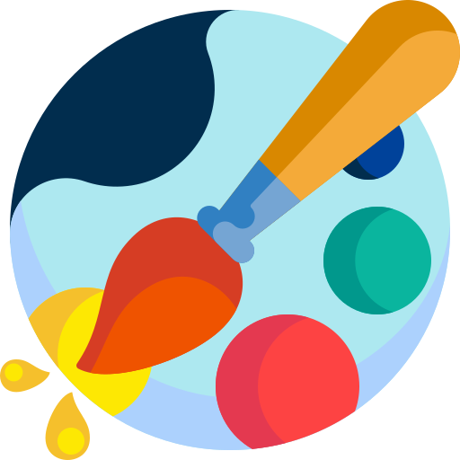

Hello!
My name is Chloe. I am a 23 year old developer and designer. I love rabbits and coffee!
My Skills

Development
I have been interested in how technology works since I was a child. In college, I decided I wanted to learn more about programming and went the Computer Science route. I am always eager to learn new skills as I progress in my career!

Graphic Design & Illustration
I have been doing art since I was in highschool. I continued to work on my skills and started my own freelancing business in late 2017. I have always had a passion in art and design. Even without a degree in fine arts, my portfolio speaks volumes for how far I have developed my skills as a designer on my own.
Get In Touch
Have a question? Need freelancing work?
Reach out to me! Include a short introduction so I can get to know you. I look forward to speaking with you!
CONTACT ME